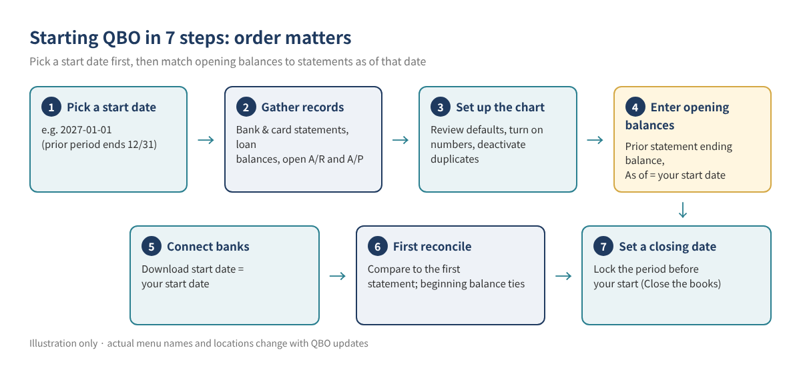
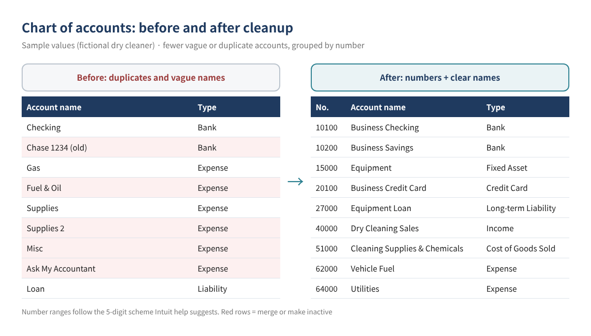
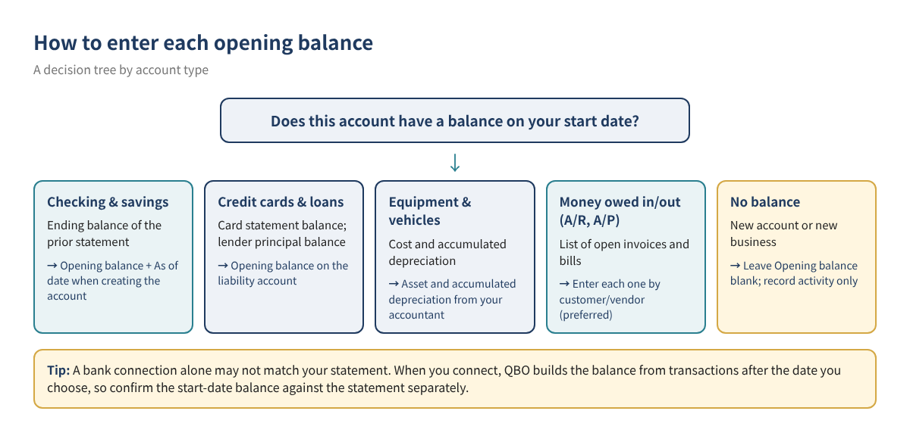
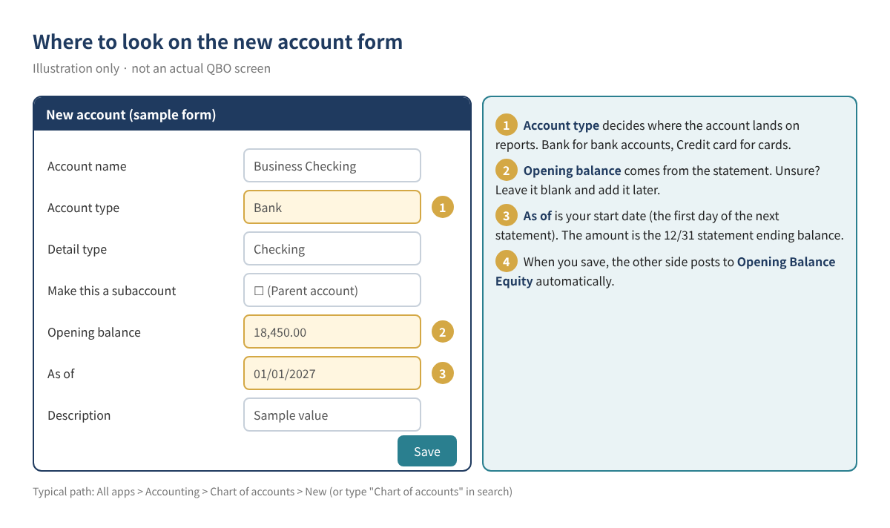

Starting QuickBooks Online Right: How to Set Up Opening Balances and Your Chart of Accounts
Most new QuickBooks Online (QBO) users connect their bank first and start categorizing right away. A few months later the balance sheet tells a different story: the bank balance doesn't match the statement, an account called Opening Balance Equity holds a large mystery number, and similar costs are scattered across "Supplies," "Supplies 2" and "Misc." The cause is almost always the same. Transactions went in before anyone picked a start date and opening balances, and before anyone cleaned up the chart of accounts.
This is the first deep-dive in our QBO beginner series. The QuickBooks Online basics guide introduced these topics briefly; here we walk through the two that form the foundation of your books, step by step, using a fictional dry cleaner with real-looking numbers you can follow.
Who this is for: owners who just created a QBO company (or are about to), businesses switching to QBO mid-year, anyone whose bank balance never matched the statement and wants a clean restart, and anyone whose chart of accounts has grown long and messy.
1. Three concepts to know first
Start date
The first day you record transactions in QBO, usually the first day of your fiscal year (for example, January 1, 2027) or of a quarter or month. Everything before that date is not entered transaction by transaction; it is summarized as a single balance per account. That balance is the opening balance.
Opening balance
The amount already sitting in an account on your start date: cash in the bank, the unpaid credit card balance, loan principal, the cost of equipment. Opening balances belong to balance sheet accounts. Income and expense accounts generally start at zero.
Opening Balance Equity (OBE)
When you enter an opening balance while creating an account, QBO automatically posts the other side to Opening Balance Equity (per Intuit's help article). Once all opening balances are in, OBE should equal assets minus liabilities, your net worth on the start date. That amount is later moved into the proper equity accounts (owner's equity, retained earnings) with your accountant. See how to clean up Opening Balance Equity for that step.

2. Pick your start date
The start date is the line between "summarized history" and "recorded transactions." Use this table as a guide.
| Situation | Suggested start date | Why |
|---|---|---|
| Brand-new business, few transactions | Business start date or first account opening date | Few or no opening balances; simplest setup |
| Existing business, starting QBO at year start | First day of the fiscal year (e.g., 1/1) | The full year's profit and loss lives in one place |
| Existing business, starting mid-year | First day of a quarter or month | Decide with your accountant how to handle earlier-year activity |
| Moving from QuickBooks Desktop | Depends on the conversion method | See Desktop to Online migration |
For existing accounts, Intuit's help article says to use the beginning date of your next statement as the opening balance date. In practice, with a January 1 start you enter the ending balance of the statement that closes December 31, dated (As of) January 1. For a brand-new account, use the day you opened it at the bank.
Tip: A mid-year start means that at tax time you must combine QBO results with the pre-QBO months from another source. A year-start setup is cleanest; if you start mid-year, agree with your accountant up front whether to back-enter the earlier months.
3. Gather your start-date records
Opening balances come from statements and documents, not memory and not the "available balance" in online banking. Collect these before you begin.
| Account type | Document | Which number to use |
|---|---|---|
| Business checking and savings | Bank statement ending just before the start date | Statement ending balance |
| Business credit card | Card statement ending just before the start date | Statement balance owed |
| Loans (equipment, SBA, vehicle) | Lender payoff letter or amortization schedule | Principal balance on the start date (no interest) |
| Fixed assets (equipment, vehicles, build-out) | Prior-year tax return depreciation schedule, accountant's records | Cost and accumulated depreciation |
| Accounts receivable | List of open customer invoices | Unpaid amount by customer and invoice |
| Accounts payable | List of unpaid vendor bills | Unpaid amount by vendor and bill |
| Unpaid sales or payroll tax | Returns and payroll provider reports | Unpaid amount on the start date (covered in later posts) |
4. Set up your chart of accounts
Clean up the chart before you enter balances. If you merge or deactivate accounts that already carry a balance, the effects land in OBE and become hard to untangle.
4-1. Open the chart of accounts
Intuit's help articles give the path All apps → Accounting → Chart of accounts. The left menu changes often, so if you can't find it, type "Chart of accounts" in the search bar.
4-2. Know the default accounts
QBO relies on a few built-in accounts. Intuit's help lists examples such as Accounts Receivable, Accounts Payable, Opening Balance Equity, Retained Earnings, Undeposited Funds, Uncategorized Income and Expense, and Reconciliation Discrepancies; turning on sales tax or inventory adds related accounts. Leave these in place.
4-3. Turn on account numbers (optional, recommended)
Account numbers are off by default. With them on, reports sort accounts by number and everything becomes easier to find.
- Go to Settings (⚙) → Account and settings → Advanced.
- Select the pencil (Edit) icon in the Chart of accounts section.
- Turn on Enable account numbers. Select Show account numbers if you want them on reports and transactions.
- Select Save, then Done.
- Back in the chart of accounts, use Batch edit (pencil icon) to fill in the Number column and save.
Intuit says any numbering system works, and offers this five-digit scheme as an example.
| Range | Category | Examples (Sample values) |
|---|---|---|
| 10000–19999 | Assets | 10100 Business Checking, 15000 Equipment |
| 20000–29999 | Liabilities | 20100 Business Credit Card, 27000 Equipment Loan |
| 30000–39999 | Equity | 30000 Owner's Equity |
| 40000–49999 | Income | 40000 Dry Cleaning Sales |
| 50000–59999 | Cost of Goods Sold | 51000 Cleaning Supplies & Chemicals |
| 60000–69999 | Expenses | 62000 Vehicle Fuel, 64000 Utilities |
| 70000–79999 | Other Income | 70000 Interest Income |
| 80000–89999 | Other Expenses | 80000 Penalties (kept separate as non-deductible) |
4-4. Add an account
In the chart of accounts, select New, enter a name, then choose the account type and detail type. Check Make this a subaccount to place it under a parent account. The account type matters more than the name because it decides where the account appears on the profit and loss and balance sheet. An equipment loan set up as an expense, for example, turns every principal payment into an expense and understates profit.
4-5. Retire accounts by making them inactive, not deleting
QBO does not let you delete accounts. You can make them inactive or merge them. Choose Make inactive from the Action column dropdown; past transactions stay intact. Keep these rules in mind:
- If an account still has a balance, QBO creates a journal entry moving that balance to OBE when you deactivate it. Bring balance sheet accounts to zero first.
- Default accounts, accounts used by products or services, accounts tied to recurring transactions, and accounts with subaccounts can't be deactivated until you unlink or move things.
- For a connected bank account, disconnect it first rather than deactivating it.
- For a long list, the Clean up tool in the chart of accounts can combine duplicates, rename accounts and change types. Intuit notes that approved changes can't be undone, so export the Account List report to Excel first.
There is a cap on accounts. According to Intuit's usage limits page, only active accounts count:
| Plan | Chart of accounts limit | Note |
|---|---|---|
| Simple Start | 250 | Active accounts only |
| Essentials | 250 | Active accounts only |
| Plus | 250 | Active accounts only |
| Advanced | Unlimited | — |

5. Enter opening balances

5-1. Bank, credit card and loan accounts: enter it when you create the account
- Go to All apps → Accounting → Chart of accounts and select New.
- Name the account and choose the account type (Bank, Credit card, a liability type) and detail type.
- Enter the statement ending balance in Opening balance. For cards and loans, enter the amount owed as a positive number.
- Enter your start date (the beginning date of the next statement) in As of.
- Add a description if you like and select Save.

5-2. Fixing a balance on an account that already exists
Open the account's View register from the chart of accounts, find the opening balance line (the payee shows as Opening Balance Equity), change the date and amount, and save. If there is no opening balance line at all, Intuit's guidance, for accounts that have not been reconciled yet, is a journal entry dated before the oldest transaction, with Opening Balance Equity on the other line: debit asset accounts, credit liability accounts. Then mark that entry reconciled ("R") in the register so it stays out of future reconciliations.
5-3. Equipment, vehicles and other fixed assets
Enter cost and accumulated depreciation separately so QBO ties to the depreciation schedule on your tax return. Get the start-date figures from your accountant, set up a fixed asset account (such as Equipment) with a subaccount (such as Accumulated Depreciation), and record both in one journal entry, as in the example below.
5-4. Receivables (A/R) and payables (A/P)
Don't type a lump-sum opening balance into A/R or A/P. You need customer- and vendor-level detail so later payments can be applied to the right item. Two approaches:
- Enter each open invoice and bill with its original date and amount. Later payments apply directly to them, which keeps things simple. Which period and account the amounts hit depends on whether you file on a cash or accrual basis, so choose the products, services and accounts with your accountant.
- One journal entry: Intuit's help describes entering A/R or A/P lines with the customer or vendor in the Name field and Opening Balance Equity on the other side. It's faster for many items, but incoming payments must then be applied against that entry.
Watch out: When you connect a bank, QBO builds the balance from downloaded transactions after the date you choose (per Intuit). If you download and add pre-start-date transactions on top of an opening balance, the history counts twice. Choose a download start date on or after your start date. How far back you can download varies by bank, from 90 days to 24 months.
6. Worked example: a fictional dry cleaner
"Maple Dry Cleaning LLC," a fictional business, picks January 1, 2027 as its start date. Its December 31 records look like this. All figures are sample values.
| Account (No.) | Type | Source | Amount | How to enter |
|---|---|---|---|---|
| 10100 Business Checking | Bank | December bank statement ending balance | $18,450.00 | Opening balance on new account, As of 01/01/2027 |
| 10200 Business Savings | Bank | December statement ending balance | $10,000.00 | Same |
| 15000 Equipment | Fixed Asset | Cost of presses and machines (accountant) | $42,000.00 | Journal entry (debit) |
| 15900 Accumulated Depreciation | Fixed Asset (subaccount) | Accumulated depreciation (accountant) | ($16,800.00) | Journal entry (credit) |
| 20100 Business Credit Card | Credit Card | December card statement balance | $2,315.40 | Opening balance on new account |
| 27000 Equipment Loan | Long-term Liability | Lender principal balance letter | $35,000.00 | Opening balance on new account |
| A/R | — | 3 open invoices ($520, $410, $350) | $1,280.00 | Enter each invoice |
| A/P | — | 2 unpaid bills ($400, $240) | $640.00 | Enter each bill |
The fixed asset journal entry (dated 01/01/2027): Debit Equipment $42,000.00 / Credit Accumulated Depreciation $16,800.00 / Credit Opening Balance Equity $25,200.00.
After the bank, card, loan and fixed asset balances are in, check OBE against your expectation.
| Line | Calculation | Amount (sample values) |
|---|---|---|
| Total assets | 18,450.00 + 10,000.00 + 42,000.00 − 16,800.00 | $53,650.00 |
| Total liabilities | 2,315.40 + 35,000.00 | $37,315.40 |
| Expected OBE (credit) | 53,650.00 − 37,315.40 | $16,334.60 |
Run a Balance Sheet as of 01/01/2027 and confirm OBE shows $16,334.60. If it doesn't, check each account's register for a wrong amount or date. A/R and A/P entered as invoices and bills are left out of this calculation because, depending on the items you use, those amounts may post somewhere other than OBE.
7. Connect banks, reconcile once, lock the past
- Connect banks: per Intuit, go to Bank transactions → Connect account, find your bank, sign in, choose the accounts and pick the download start date from the date range dropdown. Exclude any pre-start-date transactions that come in. Post 5 in this series covers bank feeds in depth.
- First reconcile: when the January statement arrives, reconcile it. The beginning balance should equal the December statement ending balance. If it doesn't, see finding duplicate transactions and reconciliation differences.
- Set a closing date: in Settings (⚙) → Account and settings → Advanced → Accounting, turn on Close the books and set the closing date to the day before your start date (e.g., 12/31/2026). The password option helps prevent accidental changes to opening balances.
8. Common mistakes
- Connecting the bank first and adding opening balances later: a long download window plus an opening balance double-counts history.
- Using the online banking "current balance": it includes uncleared checks and pending card charges. Use the statement ending balance.
- Including interest in the loan balance: the opening balance is principal only. Interest is recorded as an expense when you pay it (or as your accountant directs).
- Choosing the wrong account type: a loan or equipment set up as an expense badly distorts profit. Check types before entering balances.
- Leaving OBE alone forever: once balances are in, review OBE and close it to equity with your accountant.
- Parking items in "Misc" or "Ask My Accountant": the year-end reclass job only grows. See bulk reclassifying transactions if you need to clean up.
9. FAQ
Can I leave the opening balance blank if I don't know it yet?
Yes. Leave Opening balance blank when you create the account and add it later from the register or with the journal entry method Intuit describes. Just get it in before your first reconciliation.
The opening balance is wrong on an account I already reconciled.
Intuit's journal entry method assumes the account hasn't been reconciled. On a reconciled account, changes ripple into past reconciliations, so save the reconciliation reports for that period and talk with your accountant before editing.
Do I have to use account numbers?
No. But as the list grows, numbers keep report order consistent and cut down on confusion when you and your accountant talk about accounts.
Do I need to keep every account QBO created for me?
No. Apart from the default accounts (A/R, A/P, OBE, Retained Earnings and so on), you can deactivate accounts you won't use. Inactive accounts don't count toward the account limit.
I'm starting mid-year. What about January through now?
Either set the start date to January 1 and enter everything since, or use a mid-year start date and combine earlier results from other records at tax time. The right answer depends on what your tax return will be prepared from, so decide with your accountant before you start.
10. Setup checklist
- ☐ Start date chosen (e.g., 01/01/2027)
- ☐ Statements, loan balance letters and fixed asset records gathered
- ☐ Default accounts reviewed; unused accounts made inactive
- ☐ Account numbers turned on and a numbering scheme chosen
- ☐ Every account type double-checked
- ☐ Bank, card and loan opening balances entered from statement ending balances, As of = start date
- ☐ Fixed asset cost and accumulated depreciation entered
- ☐ Open invoices and bills entered by customer and vendor
- ☐ OBE on the Balance Sheet matches the expected amount
- ☐ Bank download start date set on or after the start date
- ☐ First reconciliation's beginning balance matches the statement
- ☐ Closing date set to the day before the start date
Related posts
- QuickBooks Online Basics for Beginners (series start)
- How to Clean Up Opening Balance Equity in QuickBooks
- Moving from QuickBooks Desktop to Online
- Find Duplicate Transactions and Reconciliation Differences
- Bulk Reclassify Transactions with a Journal Entry
This article is general educational information, not tax, legal or financial advice. Every business is different, so confirm your setup and filings with a qualified professional. QuickBooks Online screens, menu names, plans and prices change often; check your current screens and Intuit's latest official guidance.
QuickBooks is a registered trademark of Intuit Inc.; not affiliated with or endorsed by Intuit.
Sources
- Intuit, Enter and manage opening balances in QuickBooks Online
- Intuit, What to do if you didn't enter an opening balance in QuickBooks Online
- Intuit, Connect bank and credit card accounts to QuickBooks Online
- Intuit, Chart of accounts in QuickBooks Online (global)
- Intuit, Make an account inactive on your chart of accounts in QuickBooks Online
- Intuit, Use account numbers in your chart of accounts
- Intuit, Clean up your chart of accounts in QuickBooks Online
- Intuit, Learn about usage limits
- Intuit, Lock your books in QuickBooks Online